Analytics has its next stage: a working page that runs the pipe Alan set on 25 September end to end on today's real data — heat → the field for a group → a knockout inside the group → the swipe → what it says today. The page is deliverables/20261002/analytics-knockouts/ (open it from the link above). It reads one dated file, data-2026-10-02.json, built this morning by build.mjs from the chart API (the seven-rung Geiger for every served name, the Hub's own Geiger, 500 sessions of daily bars), the Hub's tables with the page's public key, the tree's fund nodes, and the comps mechanic and template that went live this week. Nothing is wired into the dashboard, nothing is deployed, no table's shape changed; the only write the page can make is the swipe, one append-only row in public.comps_decisions. Every rule on the page is a toggle with a baseline, and changing one re-runs the whole bracket in the browser. What it says on 2 October: lean toward Healthcare and Technology, away from Utilities, nothing extended; the three hottest groups with five or more served names are Semiconductors, Software – Infrastructure and Computer Hardware, the most oversold is Telecommunications Services; the names that survive are MU, UCTT, TSM · ORCL, XYZ, TOST · SNDK, WDC, ANET · T, CHTR, CMCSA; the first allocation read under the baselines is 75% invested (Semiconductors 32%, Software 21%, Hardware 11%, Telecom 11%) and 25% cash.
What the screen shows. Every sector (11) and every industry group (96) on the 453 served companies, each with: its Geiger (the seven-rung reading computed off the Hub, as of the 1 October close, averaged equally over its served members — the tree's cohort rule), the Hub's own Geiger beside it as a check, a 500-session sparkline of the daily rung, how stretched it is against its own history (today's daily-rung reading as a percentile of its own last 499 sessions — there is no fixed 70/30 line anywhere; the line that calls a group "extended" is a toggle, baseline the 90th percentile, and "oversold" the 10th), and its rotation rank (the members' 72-session and 16-session return against SPY, equal weight; rank 1 is the strongest). On top, the one sentence the heat implies, with the rule beside it.
2 October. Technology is the only sector with a positive Geiger (0.22; the Hub says 0.26) and sits at the 68th percentile of its own two years — strong, not extended. Healthcare ranks first on rotation (13 points over SPY in 72 sessions) with a Geiger of (0.12) at the 19th percentile. Nine of the eleven sectors read at or below the 10th percentile of their own daily-rung history: Energy, Industrials, Communication Services, Financials, Materials, Staples, Discretionary, Utilities and Real Estate are all near two-year lows of their own reading. So the sentence reads: Lean toward Healthcare and Technology, away from Utilities; nothing is extended. Oversold against itself: Energy, Industrials, Communication Services, Financial Services, Basic Materials, Consumer Defensive, Consumer Cyclical, Utilities, Real Estate.
Lean = the two sectors that rank best on the Geiger and the rotation together (the sum of the two ranks) and are not extended; away = the worst on both together.
Thin. 65 of the 96 industry groups have fewer than five served names (the FMP industry is fine-grained: Oil & Gas Refining & Marketing has 3 names on the Hub, Technology Distributors 1). They are shown, greyed and marked THIN, and they do not run a field. Three thin groups rank above the chosen leaders by Geiger — Oil & Gas Refining & Marketing (3 names, 0.72), Hardware, Equipment & Parts (4, 0.49), Oil & Gas Integrated (2, 0.42) — and the page says so. No served name has fewer than seven Geiger rungs today; one served company (BRK-B, Insurance – Diversified) has no seven-rung reading at all and is a blank.
Which groups. The three the heat ranks highest among groups with five or more served names (by the seven-rung Geiger now, ties by rotation rank) and the one it ranks most oversold (the lowest stretch against its own history):
| Group | Role | Served | Geiger · 7 | Stretch | Rotation rank of 96 | 72-session vs SPY | All three ways | Upside > 0 (B) | Ways disagree > 15% | Outlier marks |
|---|---|---|---|---|---|---|---|---|---|---|
| Semiconductors | leader | 42 | 0.40 | 86th | 82 | (21.8%) | 42 of 42 | 22 | 12 | 24 |
| Software – Infrastructure | leader | 19 | 0.34 | 73rd | 4 | 18.6% | 19 of 19 | 9 | 4 | 17 |
| Computer Hardware | leader | 12 | 0.28 | 72nd | 40 | (5.2%) | 12 of 12 | 5 | 6 | 5 |
| Telecommunications Services | the oversold leg | 6 | (0.65) | 0th | 58 | (10.8%) | 6 of 6 | 4 | 2 | 7 |
What each row shows. For every served company in the group: its own comparable set by the universe standard's rule (same FMP industry, SIC or shared industry fund → market value within ×10 → the nearest 10, industry first then size; the same peers.mjs the COMPS tab runs), the upside to the centre by way A (the range of the six implied medians), way B (the middle-half band) and way C (the reliability-weighted blend), the spread of the three centres as a share of the price with a DISAGREE mark when it passes the toggle (baseline 15%), the seven-rung Geiger, the rung count, the stretch, and the 16 measures of the comps table (six valuation, three growth, three margins, net debt over EBITDA, three CapEx). A and B always share a centre (both are the middle of the six medians; only their edges differ), so the page says so rather than pretend three independent votes.
Outliers are named, not trimmed (Alan: "we'll get to the outliers later"). The rule is Tukey's: beyond 1.5 × the middle half of the group on that row. In Semiconductors that names SIMO (upside 578% by A and B), TEL (283%), MU (278% by C), VSH, AXTI, CBRS, POET, OUST, NVTS, INTC and MCHP; in Software, ORCL (426%), CORZ, CRWV, PLTR; in Hardware, SMCI (298%, 498% by C) and QBTS (operating margin (1,373%)); in Telecom, CHTR (432%) and ASTS. Those upsides are what the comps say when a company's multiples sit far below its peers' medians — MU at 14.7× trailing against a peer median near 46× — and they are left in, as asked. Where the ways disagree by more than 15% of the price: 12 semiconductor names (MU 67%, UCTT 60%, SIMO 249%, VSH 247%, QRVO 56%…), four software names, six hardware names, two telecom names.
The rule, stated once (bracket.mjs, the file the page and the tests both import). Every pair in the group plays once. A game is decided by a small, named set of comparisons, each a visible win or loss with its two numbers: upside by way A, by way B, by way C (higher wins); revenue growth next FY and EPS growth next FY (higher); operating margin and free-cash-flow margin (higher); net debt over EBITDA (lower); the Geiger, seven rungs (higher — the condition); stretch against its own history (lower — the less extended name wins). A comparison with a missing number on either side is not played: a blank is a blank, never a loss. A game with fewer than three comparisons played is not played at all, so a name with blanks cannot collect draws (the fixture in the tests shows exactly that: with a one-comparison floor a name with only a Geiger drew every game and passed a real one). The side with more weighted comparison points takes the game; equal points is a draw. A win is one point in the standings, a draw a half; ties are broken by the head-to-head game, then by comparison points over the whole round. The top three advance, each with one sentence saying what it won on and what it gave up. Every comparison's on/off, direction and weight, the number that advance, the draw tolerance and the three-played floor are toggles with their baselines printed; changing any one re-runs every game on the page (the harness proved it: with the Geiger comparison turned off, UCTT passes MU and AVGO enters the three).
2 October.
| Group | Games | 1st | 2nd | 3rd | Why, in short |
|---|---|---|---|---|---|
| Semiconductors | 861 | MU · 39.5 (39–1–1) | UCTT · 37 (37–0–4) | TSM · 34.5 (32–5–4) | MU took operating margin in 33 of 33 and the three upsides in 39 of 41; gave up both growth rows. UCTT took EPS growth in 34 of 37 and the upsides; gave up the Geiger (0.23). TSM took the Geiger in 40 of 41, operating margin, net debt; gave up stretch (80th) and EPS growth. SIMO (4th) and AVGO (5th) follow. |
| Software – Infrastructure | 171 | ORCL · 17 (17–0–1) | XYZ · 17 (17–0–1) | TOST · 15.5 | ORCL and XYZ (Block) tie on points; ORCL beat XYZ head to head. Both win on the three upsides (426% and 253%) and give up the Geiger ((0.32), (0.40)). TOST wins on stretch (14th) and upside; its Geiger is (0.60). SNPS 4th, PATH 5th. |
| Computer Hardware | 66 | SNDK · 11 (11–0–0) | WDC · 10 (10–0–1) | ANET · 8.5 (8–1–2) | SNDK unbeaten: operating and FCF margin in 11 of 11, upside A in 9 of 11; gives up growth. WDC takes EPS growth in 7 of 7. ANET takes margins and net debt and gives up stretch (80th) and upside (its comps say (39%)). |
| Telecommunications Services | 15 | T · 3.5 (3–1–1) | CHTR · 3.5 (2–3–0) | CMCSA · 3 (2–2–1) | A six-name group, so the standings are close: T on the Geiger ((0.51), the least bad), EPS growth and net debt; CHTR on upside alone (432%, an outlier) and gives up net debt (4.8×); CMCSA on net debt and upside. VZ 4th on the same points as CMCSA, behind on the head-to-head. |
One card per finalist (twelve today) with its price, the three upsides, Geiger and stretch, its place, and three buttons. A press writes one append-only row to public.comps_decisions with the page's public key — the table's shape is unchanged: company and peer are the name, measure ALL, off true only for PASS, reason carries the verdict, the group and the date, source is analytics-knockouts. A later row reverses an earlier one; nothing is updated or deleted. The page reads back its own rows (source = analytics-knockouts) and shows the last decision under each card. With no key or no table it keeps the row in the browser and says so. A PASS also moves that name's share to cash in step 5.
In the test browser every write was blocked and counted: the harness answered the one POST to comps_decisions locally (one at 1680, one at 390) and nothing reached the table — comps_decisions had 0 rows before and has 0 rows after. The page's own counter says "1 saved to the table" in those runs because the harness replied as the table would; the harness's count is the truth.
Sectors. Lean toward Healthcare and Technology, away from Utilities; nothing is extended; nine sectors are oversold against themselves. Groups. Semiconductors (0.40, 86th of its own history, rotation 82 of 96), Software – Infrastructure (0.34, 73rd, rotation 4), Computer Hardware (0.28, 72nd, rotation 40); the oversold leg is Telecommunications Services ((0.65), 0th: its lowest reading in 500 sessions). Names that survive. MU, UCTT, TSM · ORCL, XYZ, TOST · SNDK, WDC, ANET · T, CHTR, CMCSA.
The first allocation read, under the stated baselines (cash 25% first; the invested 75% split 3 : 2 : 1 across the heat's first, second and third group and 1 for the oversold leg; a group at or above the 90th percentile of its own history keeps half its share, the rest to cash; the names that advanced share a group equally; a PASS goes to cash):
| Group | Sector | Share weight | Stretch | Weight | By name |
|---|---|---|---|---|---|
| Semiconductors | Technology | 3 | 86th | 32.1% | MU 10.7% · UCTT 10.7% · TSM 10.7% |
| Software – Infrastructure | Technology | 2 | 73rd | 21.4% | ORCL 7.1% · XYZ 7.1% · TOST 7.1% |
| Computer Hardware | Technology | 1 | 72nd | 10.7% | SNDK 3.6% · WDC 3.6% · ANET 3.6% |
| Telecommunications Services | Communication Services | 1 | 0th | 10.7% | T 3.6% · CHTR 3.6% · CMCSA 3.6% |
| Cash | 25.0% | the remainder |
By sector: Technology 64.3%, Communication Services 10.7%, cash 25%. Nothing is extended at the 90th-percentile baseline (Semiconductors at the 86th is the closest; at the 80th-percentile toggle it is extended and its share halves to 16.1%, cash rising to 41.1%). None of the four groups is thin. No name in them has fewer than seven rungs. The sentences, the numbers beside them, the date and the sources sit on every block of the page. This is what the pipe says under the baselines — not advice, not a trade.
/v1/scout-geiger?reading=seven on the chart API — the Hub's seven rungs (3h 4h 6h 12h D 3D W) and the Hub's equalizer (receipt d0da9a46…), computed off the Hub nightly; run scout-geiger-nightly-20261002T002101Z-d9e8e4, as of the 1 October close, 5,641 rows. A sector's or group's reading is the equal-weight mean of its served members' readings. The Hub's Geiger: /geiger?symbols=… for the 590 served symbols, shown beside it as a check (Technology 0.22 vs 0.26).deliverables/20260927/geiger-review/geiger-replay.mjs, 230-bar window), one reading per SPY session for 500 sessions (3 Oct 2024 → 1 Oct 2026), per served company; a group's series is the equal-weight mean of its members on sessions where at least half of them have a reading; the stretch is today's value's percentile in that series' own past (ties count half). Bars: /candles?symbol=…&tf=D, 454 symbols, 0 errors.ticker_industry.fmp_industry, else company_profile.industry); a sector is the FMP sector. 453 served companies, 11 sectors, 96 groups.deliverables/20261001/comps-mechanic/peers.mjs and read.mjs (the C4 rule), the read through comps-template/cohort.mjs (fundamentals, analyst_estimates, fundamentals_history, cashflow_history, balance_history, filer_currency, fx_rates with 4,729 rate-days, the tree's 51 industry funds, fmp_peers 4,455 rows and peer_sources 8,897 rows), the ways from comps-template/template.mjs. One read per group for the union of its members and their sets (Semiconductors: 46 names), then each company's snapshot on its own ten. Prices: the chart API /quotes at build time, 2 October, 13:51Z.snapshot.table.company), unchanged.bracket.mjs, stats.mjs, allocate.mjs beside the page — pure, imported by the page and by the tests.set_by alan, like the COMPS tab's, until the operator authenticates.index.html untouched; no table's shape changed; no migration needed (the decisions table exists and anon may insert).node build.mjs 500 8 would run eight.tests/analytics-knockouts.test.mjs: 8 tests, all green — one comparison (direction, blanks, tolerance); one game (weighted points, the three-played floor, a toggle changing the winner); the round robin on a four-name fixture by hand (the same winners out, run twice; the standings and points; the one-comparison floor letting a blank name draw its way up — the reason for the baseline of three; the why sentence); the stretch percentile (ties half, no history a blank); the agreement of the ways; aggregate, log return, rank, outliers; the allocation read (cash first, 3 : 2 : 1, extended halved to cash, a PASS to cash, equal names); and the built data of 2 October (every sector with a Geiger, stretch and rank; the field groups are exactly the rule's; every row has the three ways or a named reason; A and B share a centre). The whole suite: node --test tests/ — the two production failures the Common names ("every place this surface prints an age uses the one function", xfeed-publish) plus three that already fail on 83610c9 before this branch (Indicator Lab's newest page, saved review charts, readiness) and nothing else.
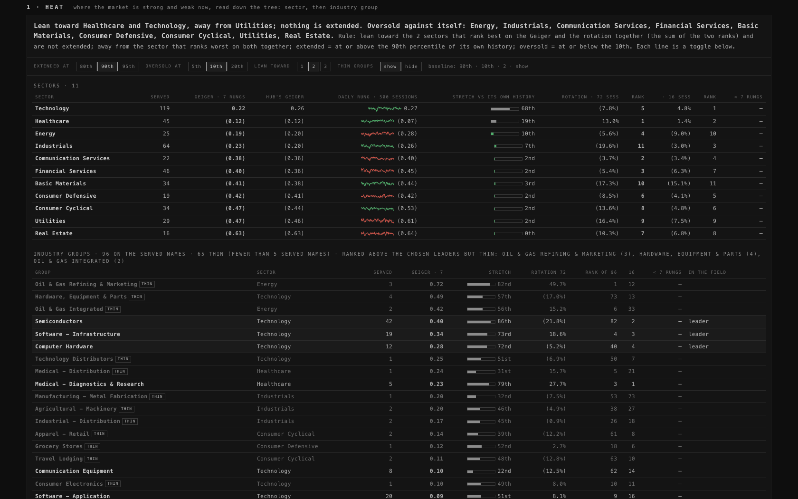
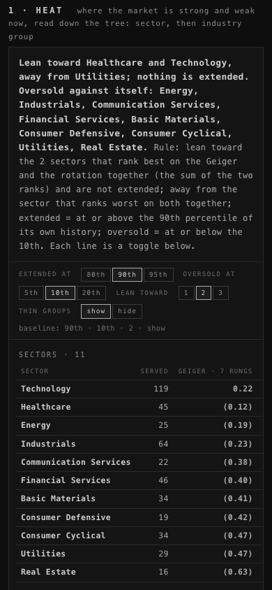
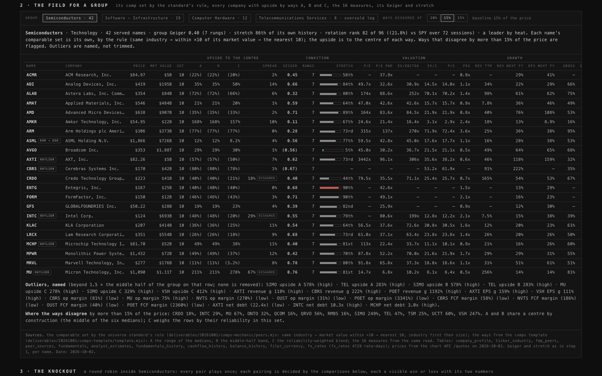
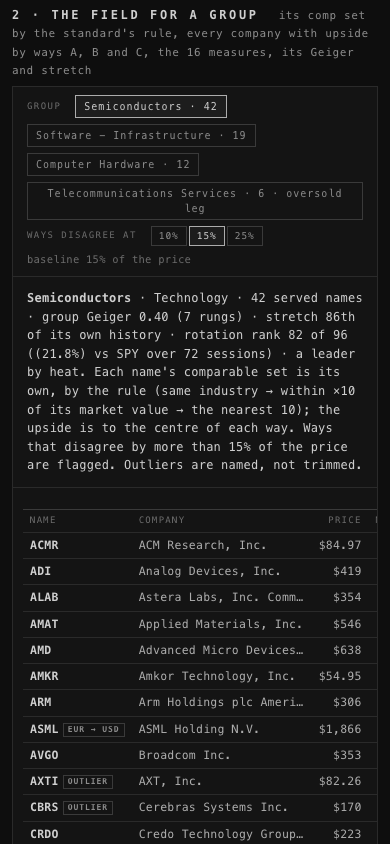
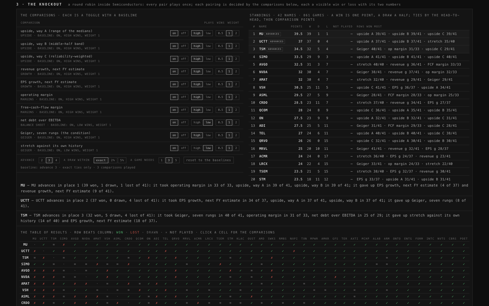
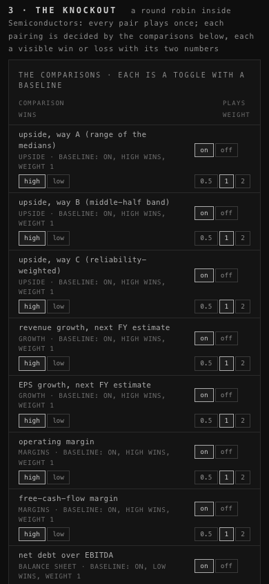
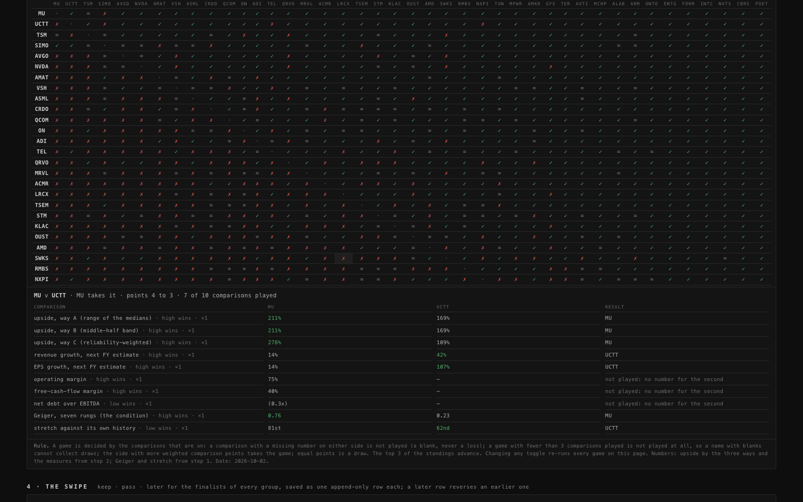
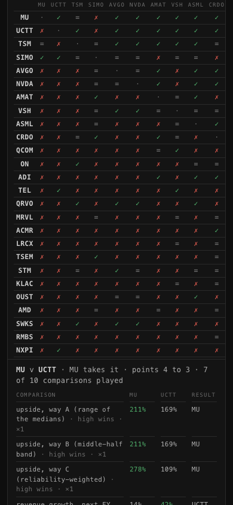
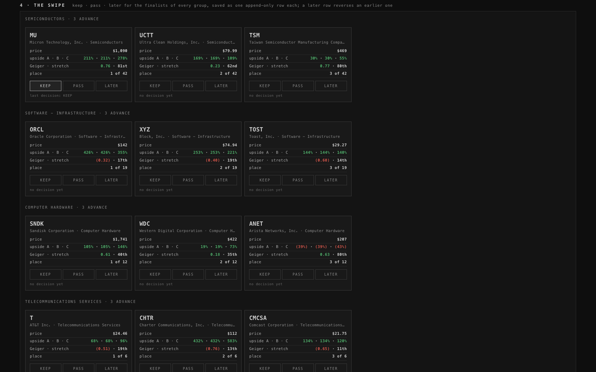
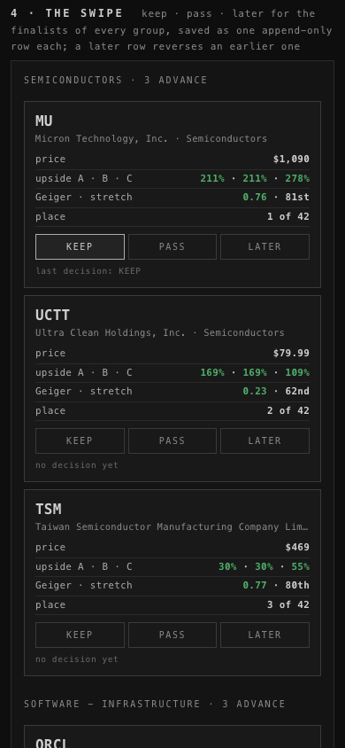
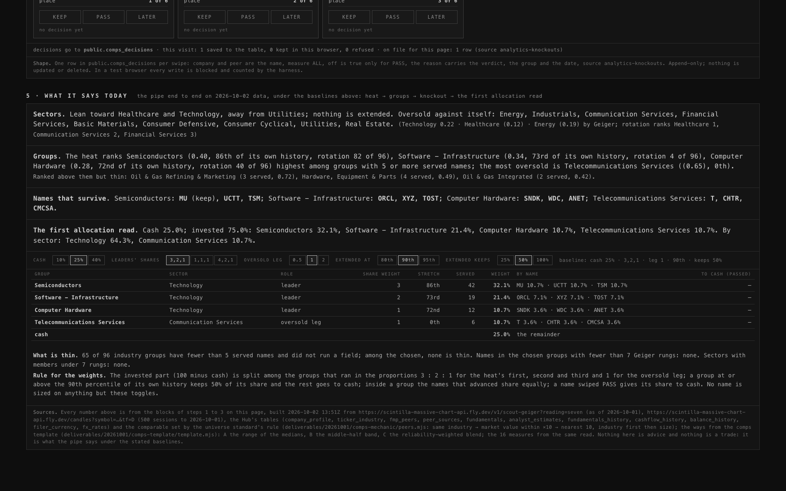
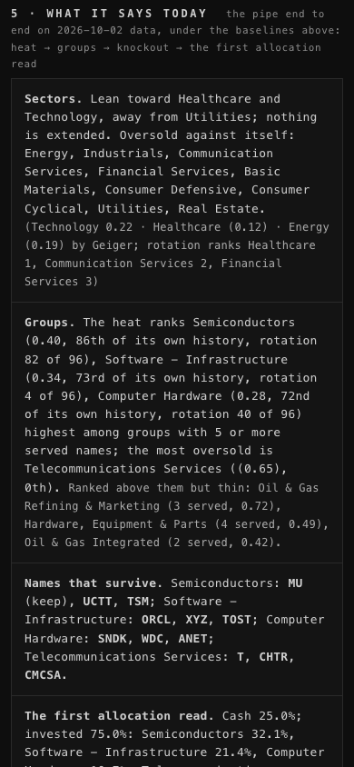